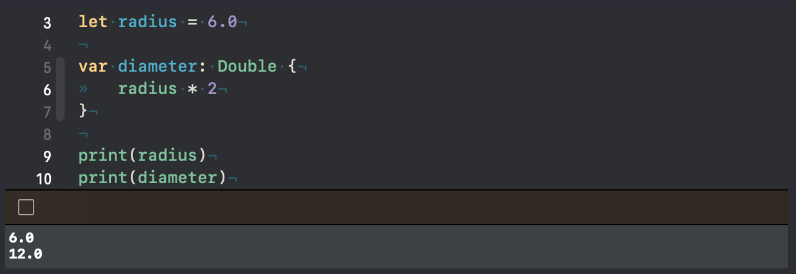
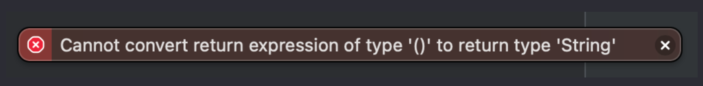
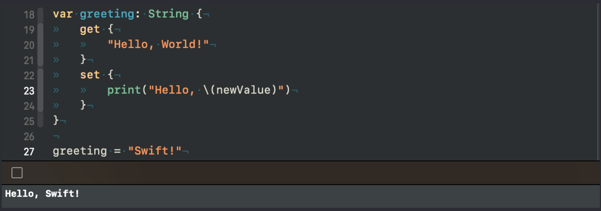
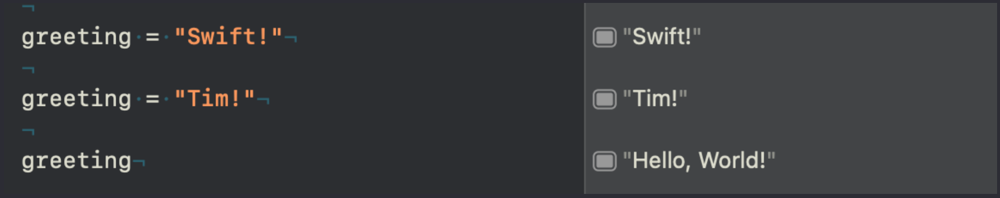
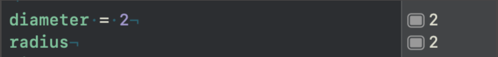
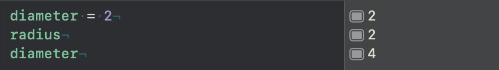
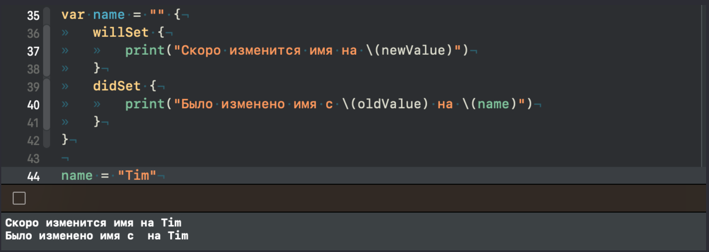

Урок 19. Вычисляемые свойства
23 Апреля 2023

Загрузить материалы к уроку.
Вычисляемые свойства.
Вычисляемые свойства в Swift – это свойства, значения которых вычисляются каждый раз при доступе к ним, вместо того, чтобы хранить фиксированное значение, как это делают обычные свойства.
Звучит не просто, но давайте посмотрим на пример и разберем как это работает:
Свойство radius является обычной константой, тогда как diameter это вычисляемое свойство, разница между ними в том, что обычное свойство уже хранится в памяти, а вычисляемое сохранится только в тот момент когда мы к нему обратимся.
Обратите внимание на синтаксис вычисляемого свойства, тип данных должен быть прописан явно. Так же прошу заметить что таки свойства всегда являются переменными.

В тот момент, когда срабатывает последний принт, будет произведен расчет и мы увидим результат на консоли:
Чтобы понять как работает вычисляемое свойство, можно сравнить его с функцией, которая возвращает результат своей работы:
И в первом и во втором случае очень важно что бы внутри фигурных скобок в результате вернулся именно тот тип данных который был заявлен, в нашем случае это тип Double, и мы не можем вернуть что то другое. Оба варианта работают одинаково.
Теперь посмотрите на следующее вычисляемое свойство:
И ответьте на вопрос, чему будет равно свойство greeting при обращении к нему?
Если вы ответили “Hello, World!” то вам следует перечитать урок про функции с возвращаемым значением.
Вычисляемое свойство должно возвращать тип String, а что нам возвращает метод print? Правильно пустые скобки (), потому что этот метод ничего не возвращает. Компилятор нам так и скажет:
Мы должны вернуть именно строку:
Вот такой код будет отрабатывать отлично, и если мы обращаемся к свойству greeting мы получим нужную нам строку.
Давайте представим аналогию с функцией, для лучшего понимания:
Хорошо, мы разобрались что вычисляемое свойство возвращает значение своего типа, не хранится в памяти пока мы к нему не обратимся, и очень похоже на работу функции с возвращаемым значением.
Вычисляемые свойства, которые мы с вами рассмотрели выше называют геттерами, и они доступны только для чтения, то есть мы не сможем им присвоить другого значения.
Вычисляемое свойство. Сеттер.
Чтобы появилась возможность задавать новое значение для вычисляемого свойства, необходимо использовать следующий синтаксис:
внутри фигурных скобок мы прописываем два блока, первый блок get, определяет то значение, которое возвращает вычисляемое свойство, по сути это то что мы рассмотрели в прошлой главе, отсюда и название геттер. А второй блок set, в нем мы будем определять что делать с входным значением.
И вот здесь вы можете заметить свойство интерполированное в строку – newValue, это системная константа, она нам дана из коробки в блоке set, это как раз то новое значение, которое мы передадим в наше вычисляемое свойство:
системное свойство newValue примет значение “Swift!” и в момент передачи этого значения, сработает блок set, и на консоли мы увидим следующий результат:
При этом свойство greeting все так же возвращает все что находится в блоке get, оно не переопределяется новым значением:
Грубо говоря, когда вы присваиваете новое значение свойству greeting, то срабатывает блок set, когда просто считываете это свойство, то срабатывает блок get. Любой из внутренних блоков get и set срабатывает в момент обращения к свойству.
Давайте загадаю вам маленькую задачку, внимательно посмотрите на следующий код:
Ответьте на вопрос, что произойдет в случае присвоения значения 2 и в случае простого обращения к свойству?
Так как мы присваиваем новое значение, то срабатывает блок set, а это значит что для свойства radius будет присвоено новое значение 2:
И когда мы следующим действием просто обращаемся к свойству diameter, срабатывает блок get, в котором мы берем радиус с новым значением и умножаем его на 2, таким образом мы получим результат 4:
Обдумайте этот момент.
Главное что вам нужно запомнить, это то что при простом обращении к вычисляемому свойству срабатывает блок get, в котором необходимо вернуть тот тип данных, которым является свойство. Если мы присваиваем новое значение, в этот момент срабатывает блок set, именно в момент присвоения нового значения.
Наблюдатели свойств.
В Swift наблюдатели свойств используются для отслеживания изменений значений свойств. Наблюдатели свойств могут быть добавлены для любых хранимых свойств.
Давайте создадим обычное хранимое свойство с типом String:
Чтобы объявить наблюдателя, нужно поставить фигурные скобки сразу после значения и определить внутри один из блоков, либо два сразу willSet и didSet:
willSet вызывается перед установкой нового значения, а didSet после установки нового значения. У каждого из этих блоков есть системные константы, у willSet свойство newValue, которое будет хранить новое значение, давайте выведем его на консоль:
А у didSet системная константа называется oldValue, это предыдущее значение, в нашем случае это будет пустая строка, давайте в этом блоке выведем на консоль сообщение с этим значением:
Вы можете заметить в блоке didSet обращение к самому свойству name, в этот момент оно уже будет содержать в себе новое значение и мы его отобразим на консоле.
Наблюдатели срабатывают только в тот момент, когда вы хотите изменить свойство, то есть присвоить новое значение, во всех остальных случаях они не реагируют:
Но как только мы присвоим новое значение, то отработает два блока сразу:
Так как изначально у нас имя было пустой строкой, то старое значение мы видим как дополнительный пробел, давайте присвоим новое значение для свойства name, а вы попробуете ответить на вопрос, как будет выглядеть фраза из блока didSet на консоле:
Думаю вы догадались, что теперь старое значение будет Tim, а новое Swift, и на консоле мы увидим следующее:
Давайте подведем итог.
Вычисляемое свойство – это свойства, значения которых вычисляются каждый раз при доступе к ним. Они не хранятся в памяти, а рассчитываются в момент обращения к ним. блок get срабатывает, когда мы просто обращаемся к свойству, блок set когда мы передаем значение в свойство. Вычисляемое свойство всегда является переменной.
В Swift наблюдатели свойств используются для отслеживания изменений значений свойств. Наблюдатели свойств могут быть добавлены для любых хранимых свойств.